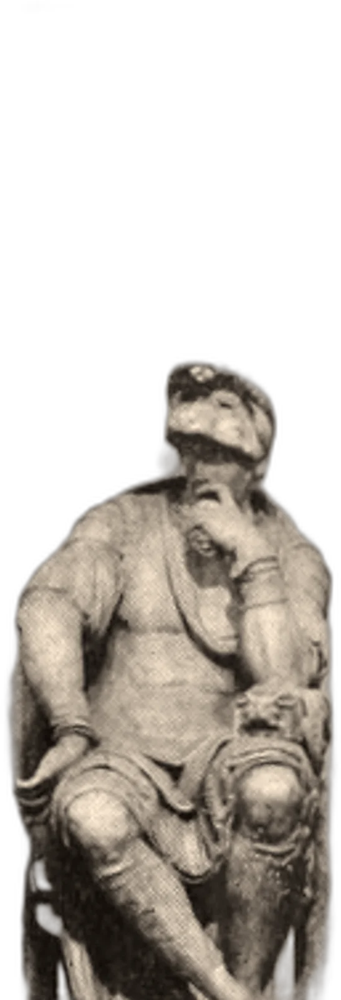

Angel capital for founders of exceptional ability and character.
Lantern is an angel-stage venture capital firm.
We write first checks and open our network across the capitals of the world.


Our Network
Eleven cities. Six kinds of capital. Wherever you build next, our network is already there.
- San FranciscoTechnological · Financial · Academic
- Los AngelesArtistic · Logistical · Manufacturing
- VancouverLogistical · Artistic
- TorontoTechnological · Financial · Academic
- PittsburghAcademic · Technological · Manufacturing
- New YorkFinancial · Artistic · Academic · Technological
- BostonAcademic · Technological · Financial
- LondonFinancial · Artistic · Academic · Technological
- ShenzhenTechnological · Manufacturing · Logistical
- Hong KongFinancial · Logistical
- ShanghaiFinancial · Manufacturing · Logistical · Technological
Investment philosophy
We invest in founders who
- are exceptionally able, and can show it.
- are ethical and honest.
- do what is right, not what is expedient.
Angel checks come first, before there is a round to name. We decide on the person, then the plan.

Stay in touch
Fund 00 is forming.
Leave your email to hear first when applications and the network open.